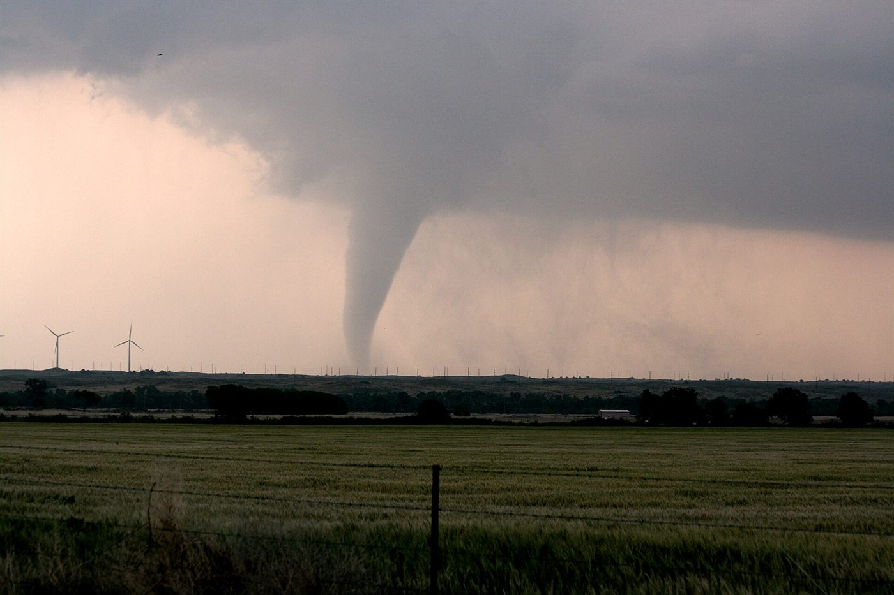
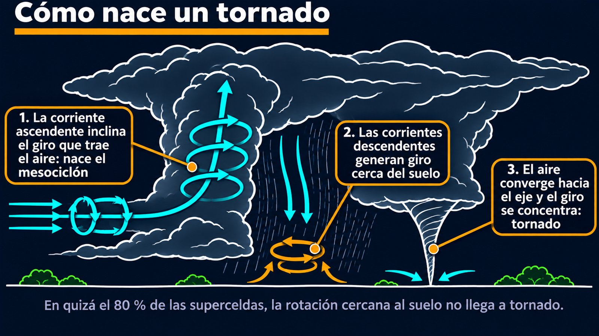

Vorticidad, cizalladura y superceldas
Una columna de aire puede arrasar un barrio, y todavía no sabemos exactamente por qué aparece en una tormenta y no en otra. Sabemos mucho: dónde se forma, qué ingredientes hacen falta y cómo se concentra el giro. Pero el Laboratorio Nacional de Tormentas Severas de Estados Unidos lo dice sin vueltas: no lo entendemos del todo [1].
Un tornado es una columna de aire que rota violentamente y se extiende desde una tormenta hasta el suelo [1]. Como el viento es invisible, se ve solo si forma un embudo de condensación con gotas, polvo y escombros [1]. Sus vientos más fuertes no se conocen con certeza, porque destruyen los instrumentos; un radar Doppler móvil midió 318 millas por hora, unos 510 km/h, el 3 de mayo de 1999 en Oklahoma [2].

La enorme mayoría de los tornados dañinos nacen de superceldas, tormentas cuya característica es una corriente ascendente persistente que rota, típicamente de 5 a 10 kilómetros de ancho [3]. Esa rotación se mide con la vorticidad, el rotor del campo de velocidades. En una supercelda, la vorticidad vertical es del orden de 10⁻² por segundo, unas 100 veces la que corresponde al giro de la Tierra en latitudes medias [3]. Esto importa: en un tornado, la rotación terrestre no pinta nada.
Paul Markowski e Yvette Richardson resumen la explicación actual en tres pasos [3].
Paso 1: el aire ya llega girando. Si el viento cambia con la altura, lo que se llama cizalladura, el aire tiene vorticidad horizontal, como un rodillo acostado. La corriente ascendente de la tormenta inclina esos rodillos hacia arriba y crea el mesociclón, una rotación de gran escala, más fuerte a alturas medias [3].
Paso 2: giro cerca del suelo. El mesociclón no alcanza: la vorticidad vertical aparece recién cuando el aire se aleja del suelo, y un tornado por definición lo toca [3]. Hace falta otra fuente: las corrientes descendentes. Las diferencias de flotación entre aire tibio y fresco generan vorticidad horizontal, y al descender, esas parcelas la inclinan hacia arriba [3].
Paso 3: concentrar el giro. El mesociclón, con su fuerte succión, atrae esa rotación cercana al suelo. Al converger hacia el eje, la conservación del momento angular amplifica la vorticidad [3].
La patinadora: una patinadora que gira con los brazos abiertos cierra los brazos y acelera. El aire que converge hacia un eje hace lo mismo: si un anillo de aire reduce su radio de 1000 a 100 metros conservando el momento angular, su velocidad de giro se multiplica por 10 (un cálculo propio).
Lo más llamativo es cuán seguido falla. En quizá el 80 % de las superceldas o más, la rotación cerca del suelo no llega a intensidad de tornado [3]. Para que lo haga, el aire tiene que ser levantado con fuerza por encima de la rotación, y aquí aparece un compromiso. La rotación cercana al suelo necesita aire enfriado por las corrientes descendentes, pero si ese aire queda demasiado frío y pesado, cuesta subirlo [3]. En las superceldas con tornado, el aire que entra suele estar apenas unos grados más frío que el ambiente [3]. Ni mucho, ni poco.

También ayuda una fuerte cizalladura cerca del suelo, que intensifica la succión: en días de brotes de tornados, el viento puede cambiar 20 m/s dentro del primer kilómetro [3].
Lo que todavía no se sabe: las campañas VORTEX, con vehículos instrumentados y radares móviles, documentaron por primera vez el ciclo de vida completo de un tornado [4]. Aun así, un radar tarda minutos en barrer una tormenta, y la vorticidad puede multiplicarse por 10 a 100 en esos minutos [3]. Las mediciones de temperatura, humedad y presión son todavía más difíciles de obtener, y se han observado a fondo muy pocas tormentas [3].
Un tornado necesita una tormenta con rotación, y esa rotación viene de inclinar el giro que el aire ya trae por la cizalladura. Después hace falta un segundo giro cerca del suelo, generado por las corrientes descendentes, y una succión capaz de concentrarlo. La mayoría de las veces, ese último paso falla. Es un fenómeno que se explica con una ecuación de la vorticidad, y que aun así sigue teniendo preguntas abiertas.
Pregunta para la comunidad: Un tornado es mucho más chico que su supercelda. Si alguien pudiera destruir uno, ¿qué pasaría después con la tormenta que lo produjo? ¿Por qué romper un tornado no resolvería el problema?